Zhuge Liang諸葛亮
181–234
Chancellor of Shu-Han. Five expeditions north, one grave in Mount Dingjun, and an appraisal that praises the administrator first.
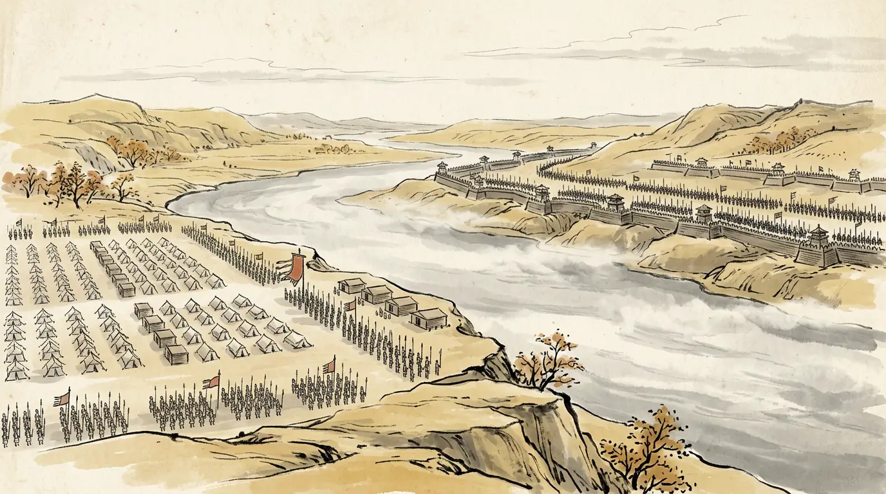
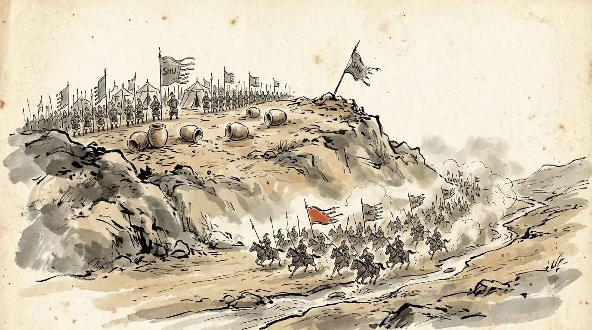
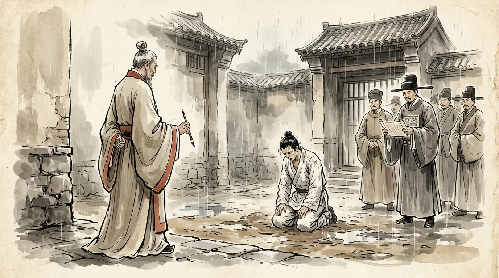
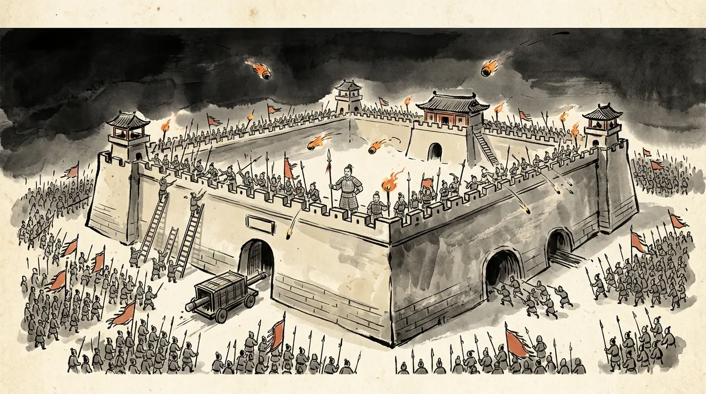
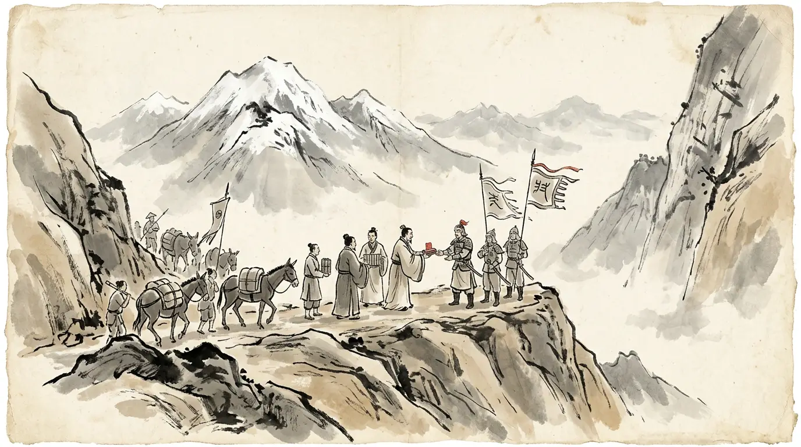
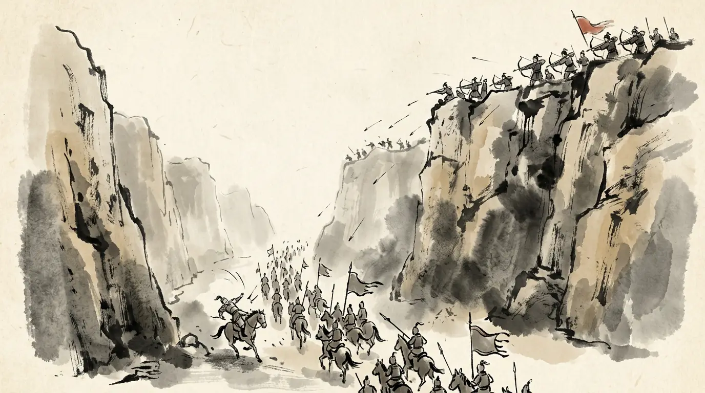
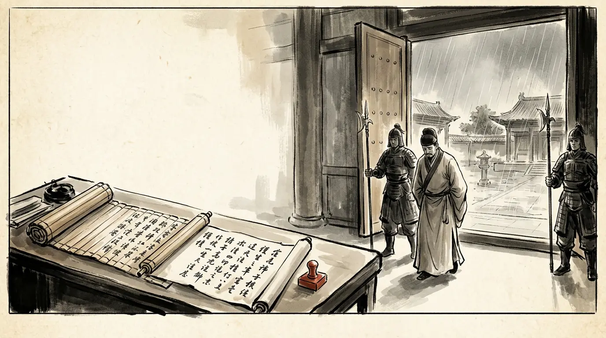
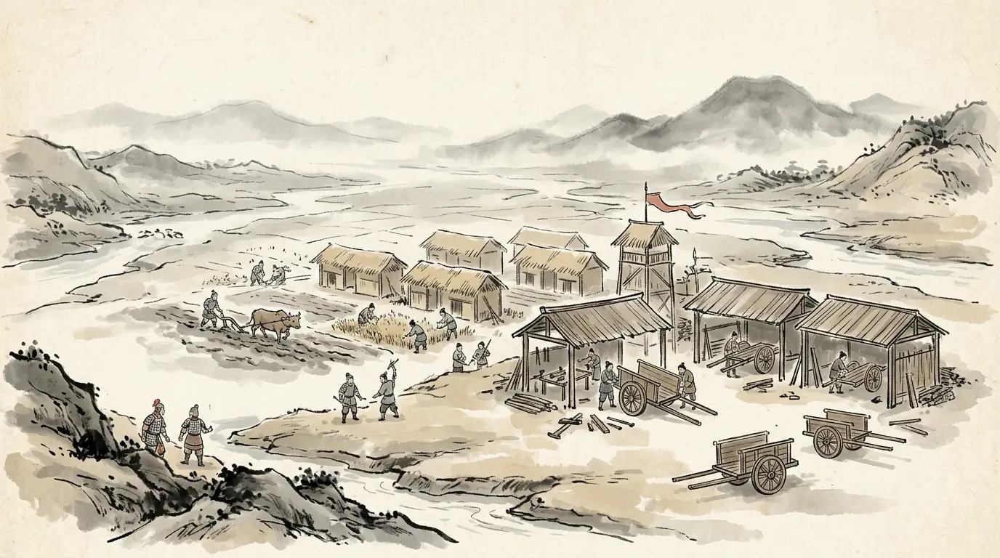
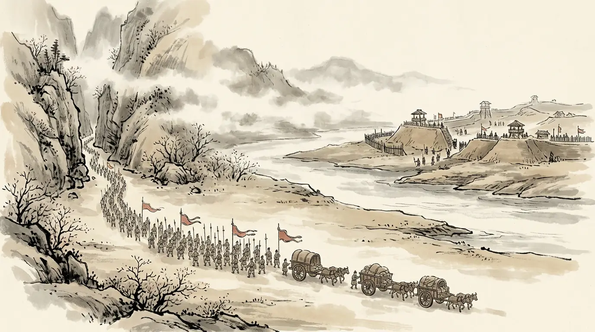
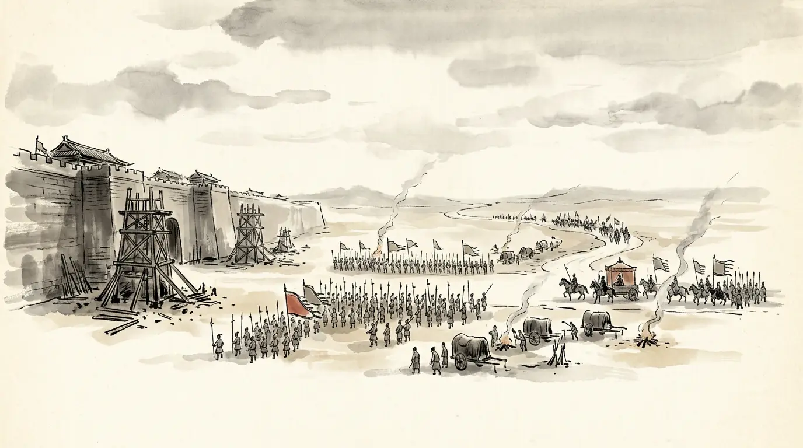
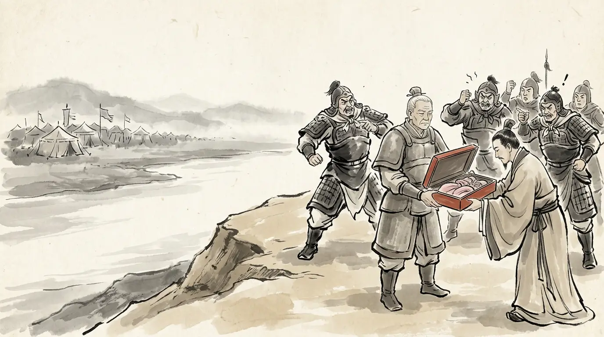
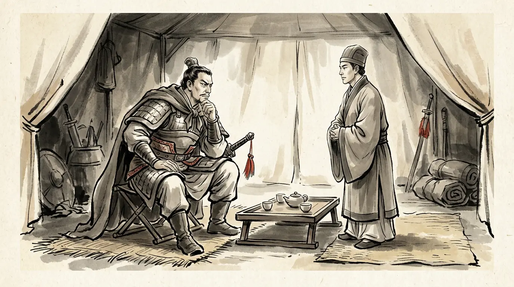
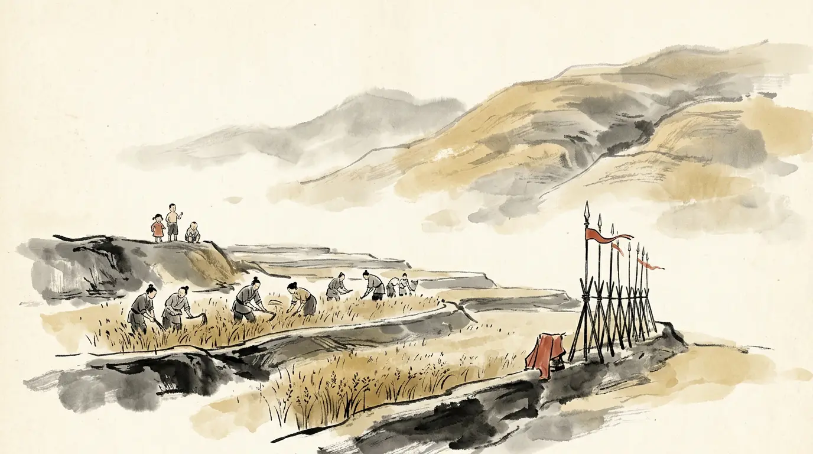
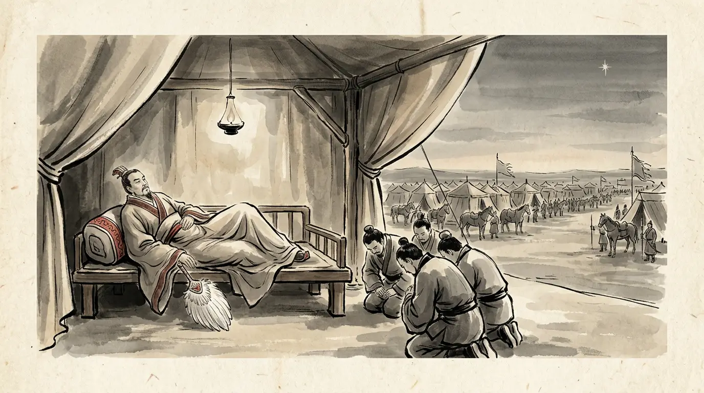
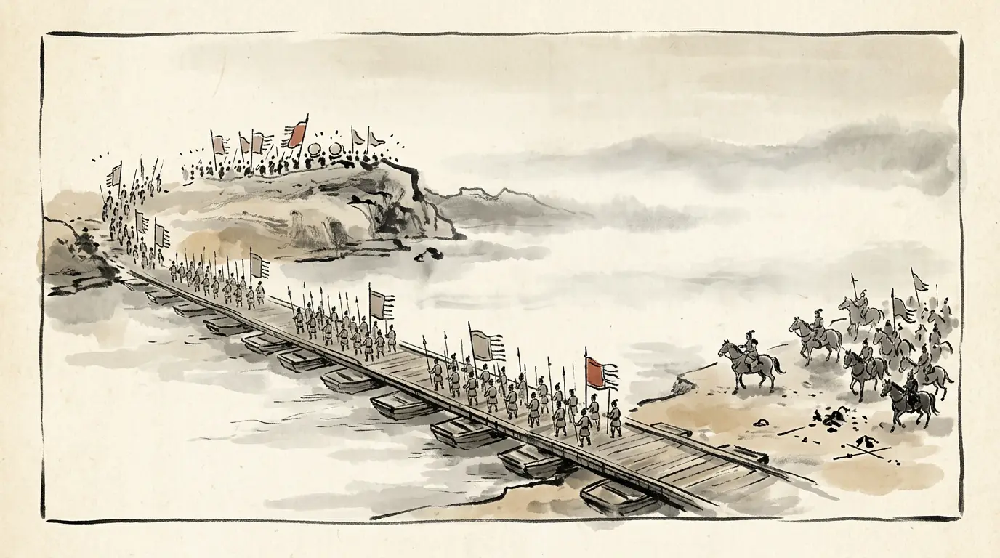
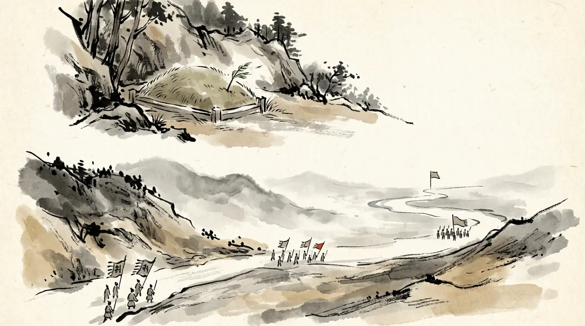
One man carried these seven years and five campaigns, and one man answered every one of them by refusing to fight. Neither lost the argument: the grain did, and then the body did.


The novel Romance of the Three Kingdoms is a masterpiece — and not a source. Where its famous scenes depart from the histories, we leave them out of the story and put them here.
The Empty City: gates flung open, Zhuge Liang on the wall with a lute, and Sima Yi turning his army away from nothing.
The only source that carries it — Guo Chong's Three Matters — is quoted by Pei Songzhi precisely in order to refute it: Sima Yi was not at Yangping in those years, and the geography and the numbers do not stand. We quote it here, as a correction, and nowhere else.
Zhuge Liang was unbeatable in the field, and only fate stopped him at the walls of Chang'an.
Chen Shou's own appraisal is colder and kinder: able in governing armies, short in stratagem; his civil administration exceeded his generalship. The expeditions died on the grain road through the Qinling — and Sima Yi's refusal of battle was the correct answer to that, not cowardice.
Ma Su was beheaded at Zhuge Liang's order while Zhuge Liang wept — the scene exactly as everyone knows it.
The Sanguozhi says Ma Su was imprisoned and died there; the execution and the tears come from later telling. The histories disagree, and this site leaves the disagreement standing rather than choosing the better story.
Every caption and quotation in this episode traces to one of these. Where scholars disagree, the panel says so.
This is the last episode of the age so far, and the last panel carries the end of it: Shu-Han's surrender in 263, Wu's in 280. Behind it — Episode 3 · Fire at Yiling (222 CE), Episode 1 · Fire on the Yangtze (208 CE), Episode 2 · The Road to Guandu (200 CE). Meanwhile — meet the cast, or read the chronology of the age.